คู่มือร้านค้า
แอปส่งอาหารบ้านดุง สำหรับร้านอาหารในหมู่บ้าน ตั้งแต่สมัคร เพิ่มเมนู รับออเดอร์ จนถึงรับจองล่วงหน้า
เปิดแอป รายการทดสอบรูปในคู่มือนี้เป็นตัวอย่าง (ร้านป้าแดง) หน้าจอจริงจะเป็นชื่อร้านและเมนูของคุณ ใช้ได้ทั้งในมือถือและคอมพิวเตอร์ ไม่ต้องติดตั้งแอป
1สมัครสมาชิกเป็นร้านค้า
- เปิดแอป กด ยังไม่มีบัญชี? สมัครสมาชิก
- ช่อง "สมัครเป็น" เลือก ร้านค้า (ขอเปิดร้านขายอาหาร)
- ใส่ชื่อ เบอร์โทร และตั้งรหัสผ่านอย่างน้อย 6 ตัว
- กด สมัครสมาชิก ไม่ต้องใช้อีเมล ครั้งต่อไปเข้าสู่ระบบด้วยเบอร์โทรและรหัสผ่าน
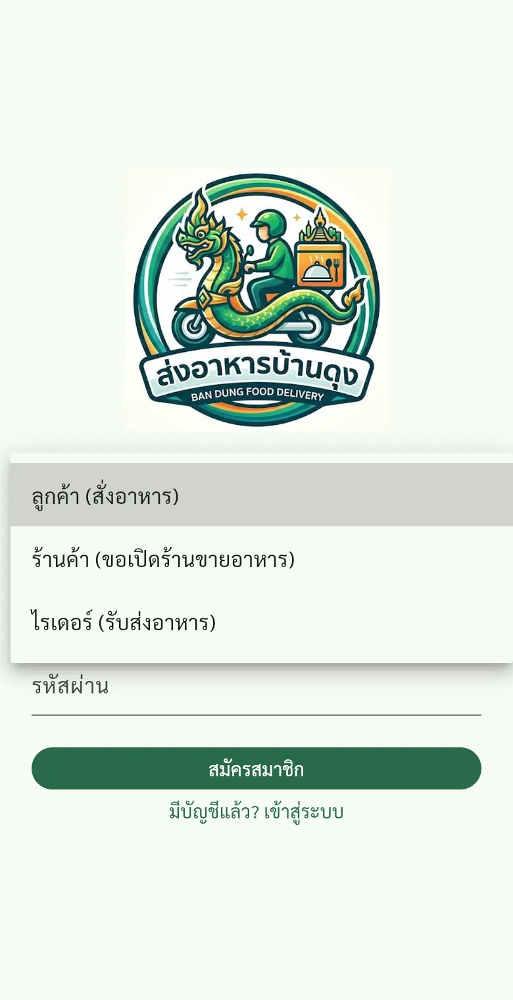
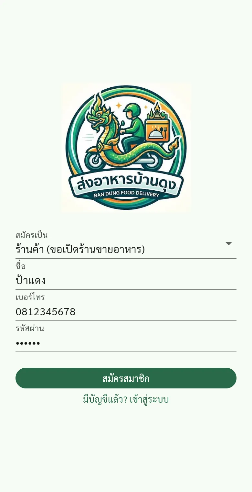
2กรอกข้อมูลร้าน
สมัครเสร็จ แอปจะเปิดหน้า "สมัครเปิดร้าน" ให้ทันที ช่องที่มี * ต้องกรอก
- ชื่อร้าน และประเภทอาหาร ลูกค้าจะเห็นใต้ชื่อร้าน
- แนะนำร้าน / เมนูเด่น และเวลาเปิด-ปิด เช่น 07:00-19:00
- โลโก้ และรูปหน้าร้าน ถ่ายแนวนอนให้เห็นป้ายร้าน ช่วยให้ลูกค้ามั่นใจ
- ที่ตั้งร้าน พิมพ์จุดสังเกต แล้วกด ปักหมุดตำแหน่งร้าน (GPS) ควรกดตอนอยู่ที่ร้าน ระบบใช้หมุดนี้คำนวณเวลาไปส่ง
- เบอร์โทรร้าน และพร้อมเพย์ เบอร์มือถือหรือเลขบัตรประชาชนที่ผูกพร้อมเพย์ ลูกค้าจะสแกน QR จ่ายเข้าบัญชีนี้โดยตรง
- รับเงินสดด้วย เปิดไว้ถ้ารับเงินสดได้
กรอกครบแล้วกด ส่งคำขอเปิดร้าน
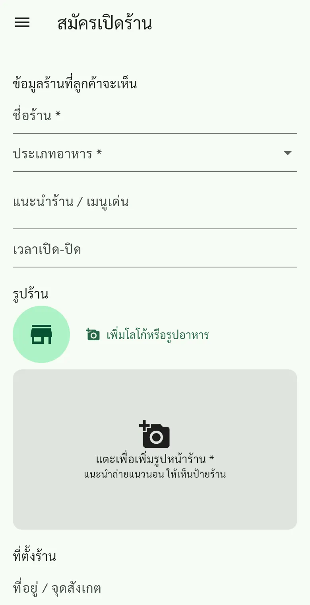
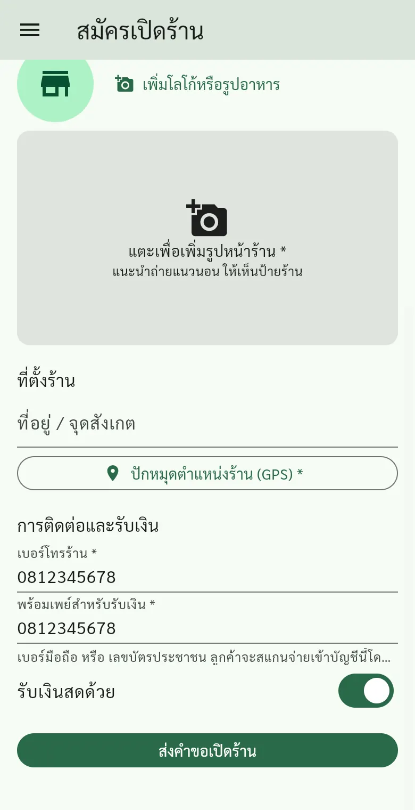
ตรวจเลขพร้อมเพย์ให้ถูกต้องเสมอ ถ้าผิด เงินจากลูกค้าจะโอนไม่เข้าร้าน
3รอผู้ดูแลอนุมัติ
หลังส่งคำขอ จะเห็นหน้า "ส่งคำขอแล้ว รอผู้ดูแลตรวจสอบ" ระหว่างนี้ยังแก้ข้อมูลได้ที่ปุ่ม แก้ไขข้อมูล และยังสั่งอาหารได้ตามปกติจากปุ่มสามขีดมุมซ้ายบน
เมื่ออนุมัติแล้ว เปิดแอปใหม่ (หรือดึงหน้าจอลงเพื่อรีเฟรช) จะเข้าหน้าร้านของคุณ พร้อมรายการสิ่งที่ต้องทำต่อ ถ้าไม่ผ่าน จะเห็นเหตุผลจากผู้ดูแล แก้ไขแล้วกดส่งใหม่ได้
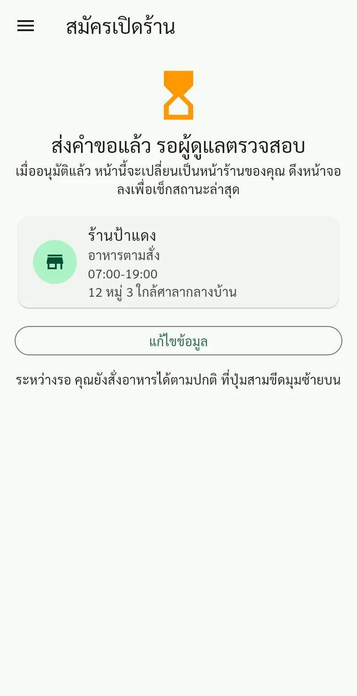
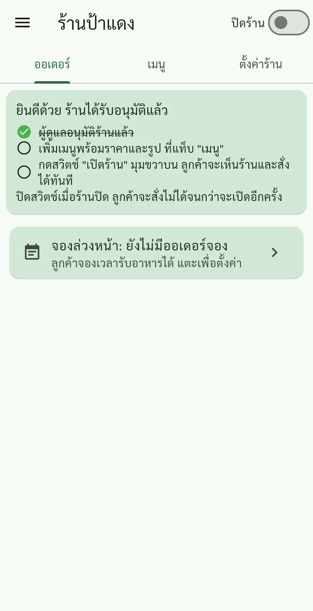
5เปิด-ปิดร้าน
สวิตช์ เปิดร้าน / ปิดร้าน อยู่มุมขวาบนของหน้าร้าน
- เปิดร้าน ลูกค้าเห็นร้านและสั่งได้ทันที
- ปิดร้าน ลูกค้าสั่งตอนนี้ไม่ได้ แต่ยังจองล่วงหน้าได้ ถ้าร้านเปิดรับจองไว้ (ดูข้อ 8)
เปิดสวิตช์ตอนร้านพร้อมขาย และปิดทุกครั้งเมื่อปิดร้าน ลูกค้าจะได้ไม่สั่งตอนที่ร้านทำให้ไม่ได้
6รับออเดอร์และรับเงิน
ออเดอร์ใหม่จะขึ้นที่แท็บ ออเดอร์ เองโดยไม่ต้องกดรีเฟรช แต่ละออเดอร์บอกเมนู จำนวน หมายเหตุ ยอดเงิน วิธีจ่าย และที่อยู่
| ปุ่ม | ใช้เมื่อ |
|---|---|
| ดูสลิป | ลูกค้าโอนผ่าน QR แล้วแนบสลิป เปิดดูรูปสลิป |
| ยืนยันได้รับเงิน | เช็กแล้วว่าเงินเข้าบัญชีจริง |
| สลิปไม่ถูกต้อง | ยอดไม่ตรงหรือเงินไม่เข้า ลูกค้าจะเห็นข้อความให้ส่งสลิปใหม่ |
| ได้รับเงินสดแล้ว | ลูกค้าจ่ายเงินสด รับเงินแล้ว |
| รับออเดอร์ / ปฏิเสธ | ยืนยันว่าทำให้ได้ หรือทำไม่ได้ (เช่น ของหมด) |
| เริ่มทำอาหาร | เริ่มทำ ลูกค้าเห็นสถานะ "กำลังทำอาหาร" |
| อาหารพร้อม | ทำเสร็จ ถ้าเป็นส่งถึงบ้าน ไรเดอร์จะเห็นงานและกดรับไปส่ง |
| ลูกค้ารับแล้ว | ออเดอร์แบบมารับเองที่ร้าน เมื่อลูกค้ามารับแล้ว |
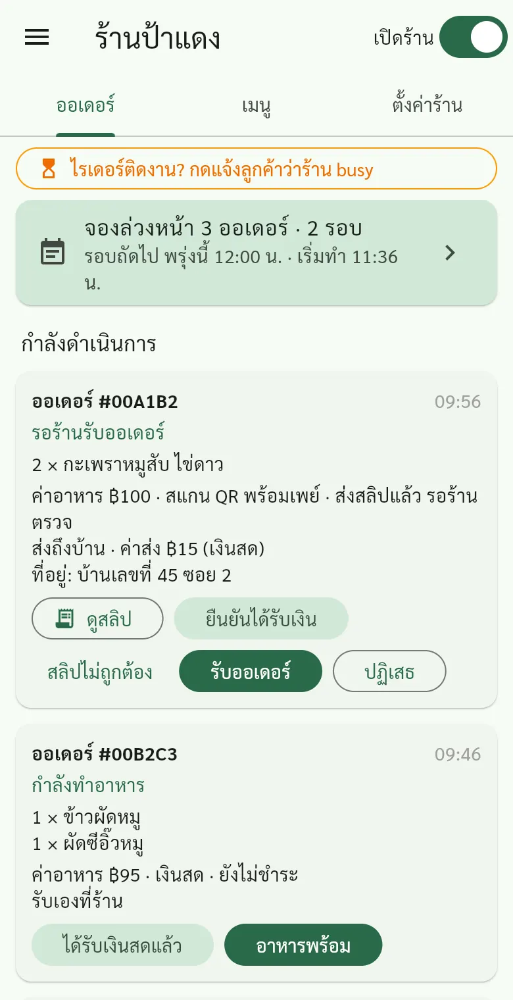
ก่อนกด "ยืนยันได้รับเงิน" ให้เปิดแอปธนาคารเช็กว่าเงินเข้าจริงทุกครั้ง สลิปอาจถูกปลอมได้
7แจ้งลูกค้าเมื่อไรเดอร์ติดงาน (busy)
ช่วงคนสั่งเยอะหรือไรเดอร์ไม่ว่าง กดปุ่มสีส้ม ไรเดอร์ติดงาน? กดแจ้งลูกค้าว่าร้าน busy แล้วเลือกเวลาประมาณ 30 ถึง 120 นาที
- ลูกค้าจะเห็นป้าย busy สีส้มที่ร้าน และตอนสั่งจะเลือกได้ว่า รอได้ / ไปรับเองที่ร้าน / ยกเลิก
- กลับมาส่งได้แล้ว กด ส่งได้ปกติแล้ว หรือกด เปลี่ยนเวลา เพื่อขยายเวลา
- ครบเวลาแล้ว ป้าย busy จะหายเอง
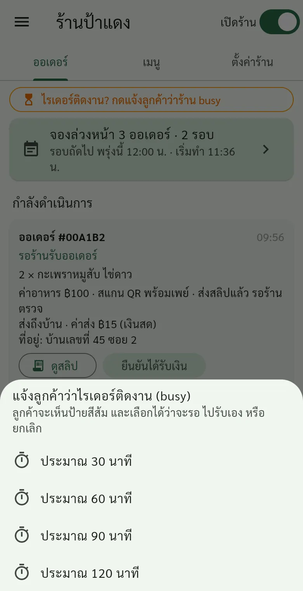
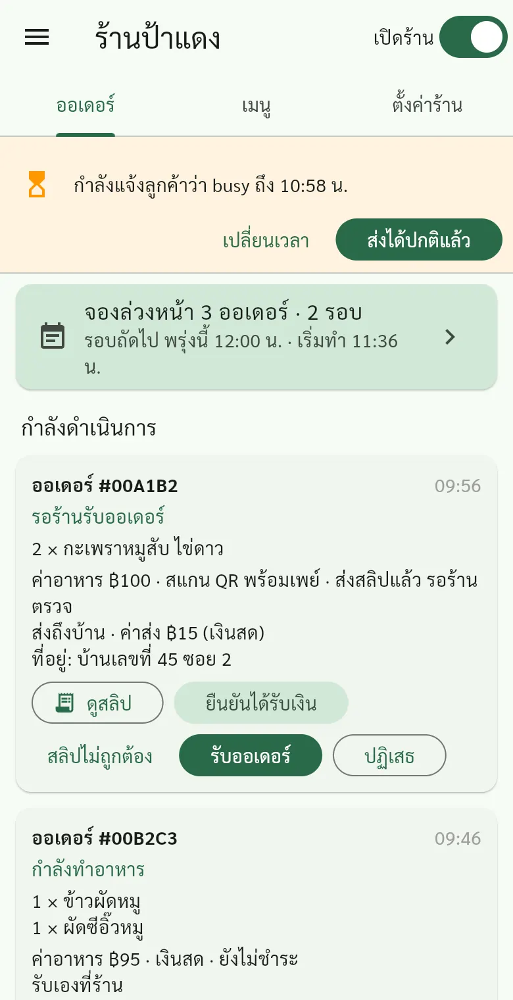
8ออเดอร์จองล่วงหน้า
ลูกค้าจองเวลารับอาหารได้ล่วงหน้า 30 นาทีถึง 3 วัน แม้ตอนร้านปิด ช่วยให้ร้านเตรียมวัตถุดิบก่อนช่วงเที่ยงหรือเย็น ออเดอร์จองจะขึ้นป้าย "จองรับ วันนี้ 12:00 น." บนการ์ดออเดอร์
- ที่แท็บ ออเดอร์ กดการ์ดสีเขียว จองล่วงหน้า ด้านบน
- ด้านบนสุด เปิด/ปิด รับจองล่วงหน้า และตั้ง เวลาทำอาหารต่อรอบ (ค่าเริ่มต้น 20 นาที)
- ดู สรุปวัตถุดิบที่ต้องเตรียม ของแต่ละวัน เช่น กะเพรา 3 จาน ข้าวผัด 2 จาน
- แต่ละ รอบส่ง บอกเวลา เริ่มทำ และ ออกจากร้าน พร้อมลำดับบ้านที่ต้องไปส่งและเวลาถึงโดยประมาณ
- อย่าลืมกด รับออเดอร์ ทุกออเดอร์จอง รอบไหนยังไม่กดรับจะมีป้ายส้มเตือน
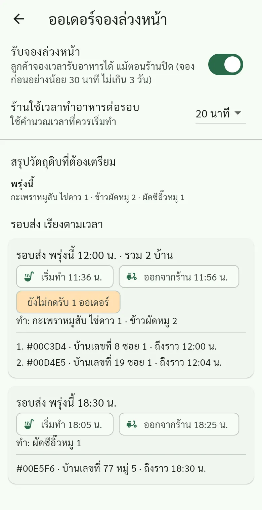
ถ้าบ้านใกล้กัน (ไม่เกิน 1 กม.) จองเวลาห่างกันไม่เกิน 30 นาที ระบบจะถามลูกค้าว่ารับพร้อมรอบเดียวกันได้ไหม ถ้าตกลง ร้านทำและส่งรอบเดียว เวลาเดินทางคำนวณจากหมุดร้านกับหมุดบ้านลูกค้า จึงควรปักหมุดร้านให้ตรง
9ตั้งค่าร้านและวิดีโอแนะนำร้าน
แท็บ ตั้งค่าร้าน แก้ชื่อร้าน รูป เวลาเปิด-ปิด หมุดร้าน เบอร์โทร และพร้อมเพย์ได้ แก้แล้วกด บันทึก ด้านล่าง
วิดีโอแนะนำร้าน กด เพิ่มวิดีโอ เลือกคลิปจากมือถือ ลูกค้าจะเห็นปุ่มเล่นวิดีโอที่ร้าน
- ยาวไม่เกิน 60 วินาที ไฟล์ไม่เกิน 50 MB (แนะนำถ่ายแนวนอน ความละเอียด 720p)
- เปลี่ยนวิดีโอได้วันละ 2 ครั้ง การลบวิดีโอไม่นับ
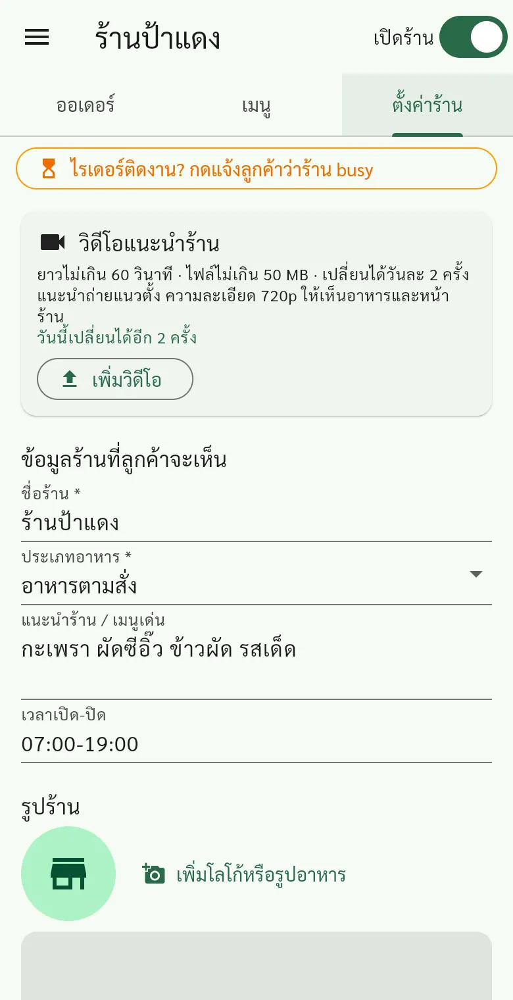
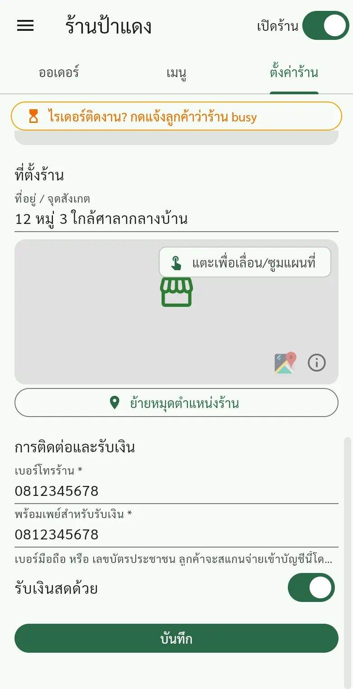
10เปิดคู่มือจากในแอป และปัญหาที่พบบ่อย
กดปุ่มสามขีดมุมซ้ายบน แล้วเลือก คู่มือร้านค้า จะเปิดหน้านี้ ในเมนูเดียวกันยังมี "สั่งอาหาร" และ "ออกจากระบบ"
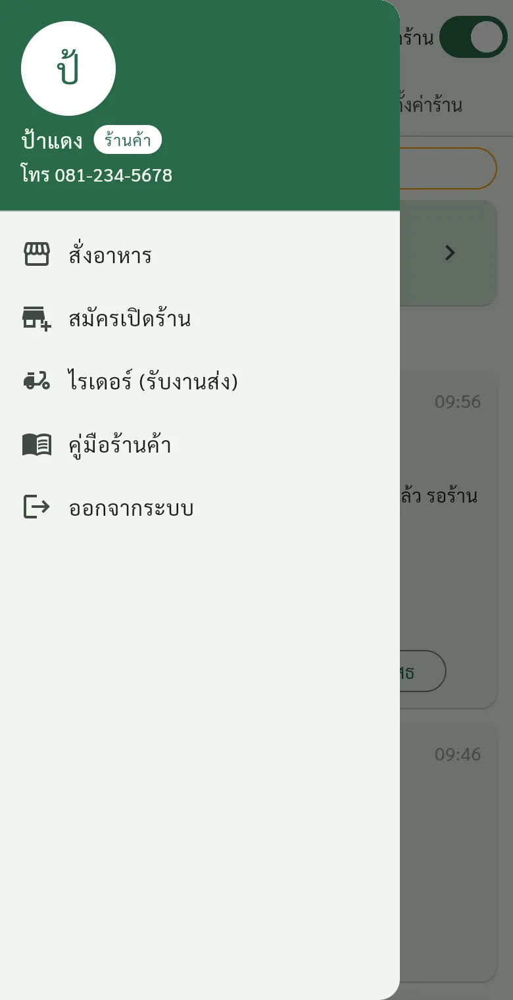
| อาการ | วิธีแก้ |
|---|---|
| ลืมรหัสผ่าน | ติดต่อผู้ดูแลระบบ |
| อนุมัติแล้วแต่ยังเห็นหน้ารออนุมัติ | ปิดแล้วเปิดแอปใหม่ หรือรีเฟรชหน้าเว็บ |
| ลูกค้าบอกหาร้านไม่เจอ | เช็กว่าเปิดสวิตช์ "เปิดร้าน" แล้ว และมีเมนูอย่างน้อย 1 รายการ |
| ออเดอร์ไม่ขึ้น | ดึงหน้าจอลงหรือรีเฟรช เช็กอินเทอร์เน็ต |
| ร้านถูกระงับชั่วคราว | ติดต่อผู้ดูแลระบบ |
11รายการทดสอบสำหรับร้านค้า
ทำตามทีละข้อ ข้อไหนติดหรือไม่เข้าใจ ถ่ายรูปหน้าจอส่งให้ผู้ดูแลระบบ
- สมัครสมาชิกโดยเลือก "ร้านค้า" ได้
- กรอกข้อมูลร้าน ใส่โลโก้ รูปหน้าร้าน ปักหมุด และส่งคำขอได้
- ผู้ดูแลอนุมัติแล้ว เห็นหน้าร้านของตัวเอง
- เพิ่มเมนูพร้อมรูปและราคาได้อย่างน้อย 3 รายการ
- ปิดสวิตช์เมนูเป็น "หมด" แล้วลูกค้าสั่งเมนูนั้นไม่ได้
- เปิดร้าน แล้วให้คนอื่นลองสั่ง เห็นออเดอร์ขึ้นเอง
- ลูกค้าโอนผ่าน QR แล้วเห็นสลิป กดยืนยันได้รับเงินได้
- กด รับออเดอร์ เริ่มทำอาหาร อาหารพร้อม ครบทุกขั้น
- ลองออเดอร์แบบมารับเองที่ร้าน และกด ลูกค้ารับแล้ว
- กดแจ้ง busy แล้วลูกค้าเห็นป้ายสีส้ม จากนั้นกด ส่งได้ปกติแล้ว
- ปิดร้าน แล้วให้ลูกค้าลองจองล่วงหน้า เห็นในหน้า "จองล่วงหน้า"
- อัปโหลดวิดีโอแนะนำร้าน และลูกค้าเปิดดูได้